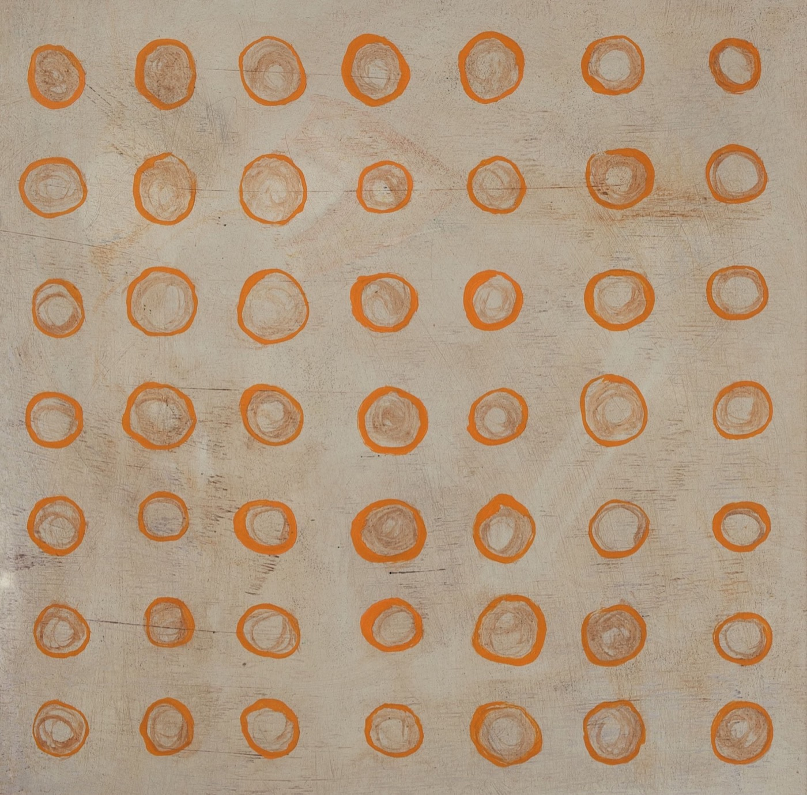
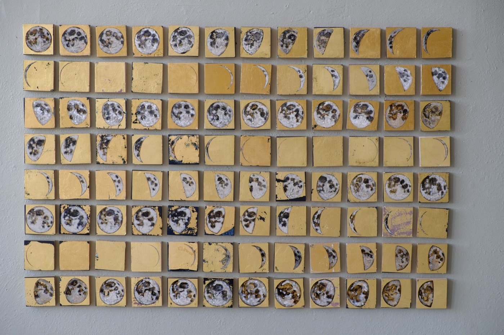
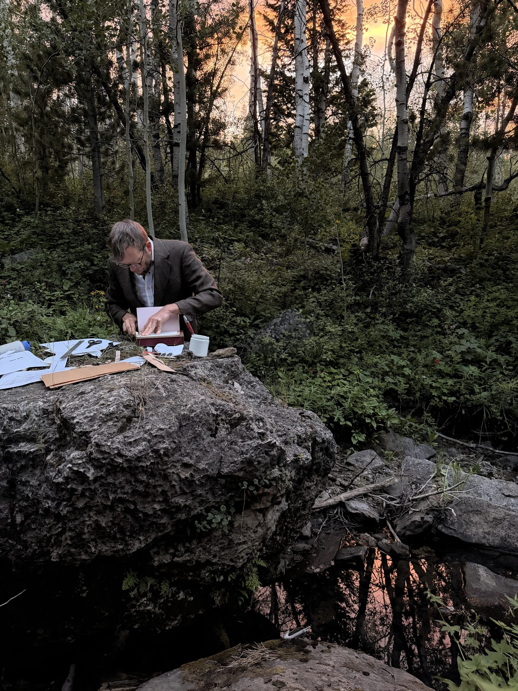

Sc. 02 · Painting
Oil on linen · 2024
00:00:14:03 · TAKE 1
00:00:14:03 · TAKE 1
The studio loses its walls. A summer spent finding out whether the whole operation — paintings, a press, a bindery — can be carried, and keep working from anywhere.
The sky becomes architecture, water vapor transformed into towers reaching toward infinity.



The same mark, made until it sings.

I will watch many beloved wilderness burn every year for the rest of my life.
